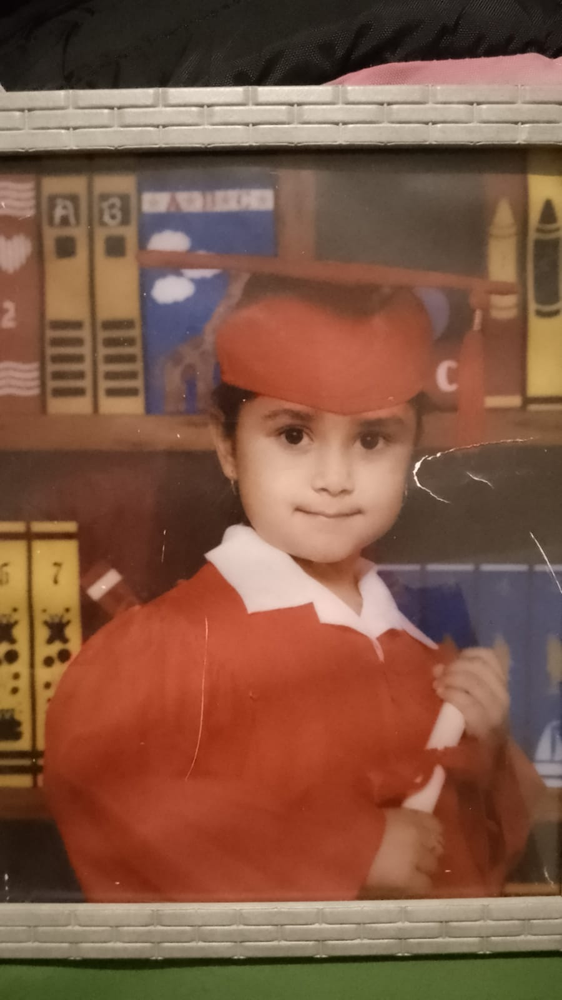

Maria Guadalupe Aguayo Romero
Estidiante de Ingenieria en Sistemas Computacionales
Me considero una persona responsable y ordenada
Buscando mi primera experiencia laboral
Tel:633-130-29-67
Correo:laguayo@gmail.com
Facebook:Lupita Aguayo
Estudiante de Ingenieria en sistemas Computacionales
--En Curso--
Gen: 2015-2018
Conalep Agua PrietaTecnica en Informatica

Gen: 2012-2015
General #1Gen: 2006- 2011 (No terminado)
Leandro ValleGen: 2011-2012 (Graduacion)
Francisco VillaGen: 2005-2006
Dante Alighieri Español Nativo
Ingles Basico
-Microsoft Office
-Neatbens
-Visual Studio Code
-SQL
-Visual Studio
-Java
2017-2023 (Periodo Vacacional)
Tortilleria Any
Cajera, Manejo de Maquinaria
Participacion en servicio voluntario con pacientes y cursos
Participacion en taller a preparatorias con el uso de App Inventor